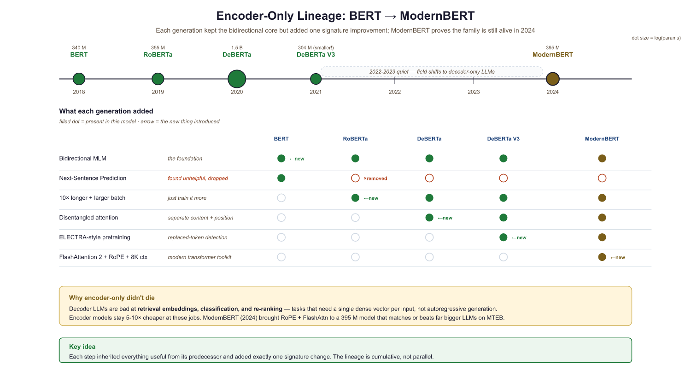
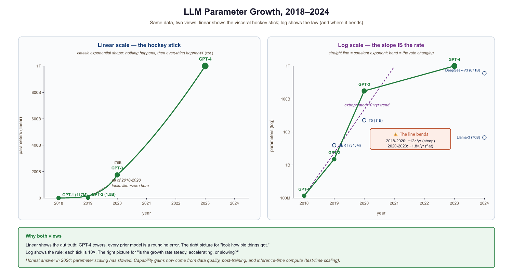

Every few months someone trains a model so large it makes the previous one look like a pocket calculator. And every few months, the previous one is still running in production somewhere, unbothered.
Scale, Perpetually Scaling AI Agent
Prerequisites
This section assumes familiarity with the Transformer architecture (encoder, decoder, and attention mechanisms) covered in Section 4.1. Tokenization concepts from Chapter 02 (BPE, WordPiece, SentencePiece) will also be referenced throughout.
Why study historical models? The landscape of large language models did not emerge overnight. Each landmark model introduced a crucial innovation, whether it was bidirectional pre-training, massive scale, the text-to-text framework, or emergent in-context learning. Building on the Transformer architecture from Section 4.1, understanding these models in sequence reveals the compounding insights that led to today's systems. By the end of this section, you will be able to explain why each model mattered and how its ideas persist in current architectures.
6.1.1 BERT: Bidirectional Understanding
In October 2018, Google released BERT (Bidirectional Encoder Representations from Transformers), a model that fundamentally changed how the NLP community thought about pre-training. Before BERT, language models were trained left-to-right (or right-to-left), seeing only one direction of context at a time. BERT's key innovation was the masked language modeling (MLM) objective, which allowed the model to attend to both left and right context simultaneously.
How BERT Works
BERT takes a sequence of tokens, randomly masks 15% of them, and trains the model to predict the original tokens from the surrounding context. This bidirectional conditioning is powerful because understanding language often requires seeing both what comes before and after a word. Consider the sentence: "The bank was steep and muddy." You need the word "steep" (which comes after "bank") to determine that "bank" refers to a riverbank, not a financial institution.
The MLM training objective minimizes the Transformer architecture loss over only the masked positions:
Here $x_{\text{masked}}$ denotes the full sequence with masked tokens replaced by [MASK]. The model sees all positions simultaneously (bidirectional context), but the loss is computed only at the masked positions. This stands in contrast to the causal language modeling objective used by GPT models, which predicts each token from only the preceding tokens:
The causal LM loss sums over every token in the sequence, predicting each from its left context only. This autoregressive formulation is what enables GPT-style models to generate text token by token at inference time.
Architecturally, BERT is a stack of Transformer encoder layers. BERT-Base uses 12 layers, 768 hidden dimensions, and 12 attention heads (110M parameters). BERT-Large scales this to 24 layers, 1024 hidden dimensions, and 16 heads (340M parameters). The model was trained on BookCorpus (800M words) and English Wikipedia (2,500M words).
# Loading and using BERT for masked language modeling
from transformers import BertTokenizer, BertForMaskedLM
import torch
tokenizer = BertTokenizer.from_pretrained('bert-base-uncased')
model = BertForMaskedLM.from_pretrained('bert-base-uncased')
# Mask a token and predict it
text = "The capital of France is [MASK]."
# Tokenize text and convert to model-ready tensors
inputs = tokenizer(text, return_tensors="pt")
# Disable gradient tracking for faster inference
with torch.no_grad():
outputs = model(**inputs)
mask_idx = (inputs["input_ids"] == tokenizer.mask_token_id).nonzero(as_tuple=True)[1]
logits = outputs.logits[0, mask_idx, :]
top_tokens = logits.topk(5).indices[0]
for tok in top_tokens:
# Convert token IDs back to human-readable text
print(f" {tokenizer.decode([tok])}")The transformers pipeline API reduces the above to two lines:
from transformers import pipeline
fill = pipeline("fill-mask", model="bert-base-uncased")
print(fill("The capital of France is [MASK]."))
# [{'token_str': 'paris', 'score': 0.88}, ...]Listing 6.1. BERT fill-mask in two lines using HuggingFace's pipeline API. The encoder produces a probability distribution over the vocabulary at the [MASK] position; top-k results are returned with their scores. This is the canonical "encoder reads both sides" demonstration, contrasting with the left-to-right generation used for GPT.
BERT Variants
Who: An NLP team at a large e-commerce company responsible for automating ticket classification and response drafting.
Situation: Their production system used fine-tuned BERT for ticket classification (encoder model) and a separate seq2seq model for response generation. Maintaining two models doubled infrastructure complexity.
Problem: As the product line expanded, maintaining separate classification and generation models became unsustainable. New categories required retraining both models independently, and the two systems occasionally disagreed on ticket intent.
Dilemma: Consolidating to a single encoder-decoder (T5) would simplify maintenance but lose BERT's strong classification accuracy. Switching to a GPT-style decoder-only model could handle both tasks via prompting, but the team worried about classification precision.
Decision: They migrated to a fine-tuned Llama 3 8B model that handled both classification (via constrained generation) and response drafting in a single forward pass.
How: The team formatted ticket classification as a text completion task with constrained output tokens (category names only), then generated draft responses conditioned on the predicted category. Both tasks ran on the same model with different prompt templates.
Result: Classification accuracy remained within 1.2% of the BERT baseline while response quality improved by 15% (measured by human evaluation). Infrastructure costs dropped 40% by eliminating the second model.
Lesson: Understanding the architectural lineage from BERT to GPT helps teams recognize when a single decoder-only model can replace specialized encoder and encoder-decoder systems, reducing complexity without sacrificing quality.
RoBERTa (2019) demonstrated that BERT was significantly undertrained. By removing the next-sentence prediction objective, training on more data (160GB vs. 16GB), using larger batches, and training longer, RoBERTa achieved substantially better results with the same architecture. This was an important lesson: training procedure matters as much as architecture.
ALBERT (2019) tackled parameter efficiency through two techniques: factorized embedding parameterization (separating the vocabulary embedding size from the hidden layer size) and cross-layer parameter sharing. ALBERT-xxlarge achieved state-of-the-art results with 70% fewer parameters than BERT-Large.
DeBERTa (2020) introduced disentangled attention, which represents each token using two separate vectors encoding content and position. This allowed the model to compute attention scores based on content-to-content, content-to-position, and position-to-content interactions independently. DeBERTa also added an enhanced mask decoder that incorporates absolute position information in the final prediction layer.

6.1.2 The GPT Series: Scaling Autoregressive Models
When GPT-2 was released in 2019, OpenAI initially withheld the full model weights, citing concerns about misuse for generating fake news. The internet responded by training open-source replicas within months. It was perhaps the first time in AI history that "we cannot release this, it is too dangerous" was met with "hold my beer."
While BERT championed bidirectional encoding, OpenAI pursued a different path: unidirectional, autoregressive language modeling. This design choice, initially seen as a limitation, would prove transformative when combined with scale.
GPT-1 (2018): The Transfer Learning Proof of Concept
GPT-1 demonstrated that a decoder-only Transformer trained on raw text could learn useful representations that transfer to downstream tasks. With 117M parameters trained on BookCorpus, GPT-1 was modest in size. Its contribution was conceptual: unsupervised pre-training followed by supervised fine-tuning produced strong results across a range of NLP tasks, from textual entailment to question answering.
GPT-2 (2019): Emergent Zero-Shot Capabilities
GPT-2 scaled to 1.5 billion parameters and was trained on WebText, a 40GB dataset of web pages linked from Reddit posts with at least 3 karma. The critical discovery was that the model could perform tasks it was never explicitly trained for. By simply conditioning on a prompt like "Translate English to French:", GPT-2 could translate, summarize, and answer questions, all without any task-specific fine-tuning. This was the first compelling demonstration of what we now call zero-shot learning.
# GPT-2: Zero-shot text generation
from transformers import GPT2LMHeadModel, GPT2Tokenizer
tokenizer = GPT2Tokenizer.from_pretrained('gpt2')
model = GPT2LMHeadModel.from_pretrained('gpt2')
# Zero-shot task: summarization via prompting
prompt = """Article: The researchers found that training language models
on more data consistently improved performance across all tasks.
TL;DR:"""
# Tokenize text and convert to model-ready tensors
inputs = tokenizer(prompt, return_tensors="pt")
# Run autoregressive generation from the input prompt
outputs = model.generate(
**inputs,
max_new_tokens=30,
temperature=0.7,
do_sample=True,
pad_token_id=tokenizer.eos_token_id
)
# Convert token IDs back to human-readable text
print(tokenizer.decode(outputs[0], skip_special_tokens=True))GPT-3 (2020): The In-Context Learning Revolution
GPT-3 was a watershed moment. At 175 billion parameters, trained on 300 billion tokens, it demonstrated that scale alone could produce qualitatively new capabilities. The most significant was in-context learning (ICL): by providing a few examples in the prompt, GPT-3 could perform tasks with no gradient updates whatsoever. This "few-shot" paradigm upended the traditional train-then-fine-tune workflow.
GPT-3 came in several sizes, from 125M to 175B parameters, providing the first empirical evidence for smooth scaling laws in language modeling. The paper showed that performance on virtually every benchmark improved predictably as model size increased, following power-law curves.
GPT-3 revealed that task-specific behavior could emerge from sheer scale without task-specific training. A model trained only to predict the next token could answer questions, translate languages, write code, and perform arithmetic, simply because these capabilities were implicit in the pre-training data. This insight drives the entire foundation model paradigm: invest heavily in pre-training, and downstream capabilities follow.
InstructGPT and ChatGPT (2022): Aligning with Human Intent
Raw language models predict likely text, not helpful text. InstructGPT addressed this gap through reinforcement learning from human feedback (Section 20.1), a technique we cover in depth in Section 20.1. The process had three stages: supervised fine-tuning on human-written demonstrations, training a reward model on human preference comparisons, and optimizing the language model against that reward using Section 20.1. The resulting model was more helpful, less toxic, and better at following instructions, despite being far smaller (1.3B parameters) than GPT-3.
GPT-4 (2023): Multimodal and Capable
GPT-4 extended the paradigm to multimodal inputs (text and images, as explored in Chapter 27) while achieving near-human performance on professional exams like the bar exam and medical licensing tests. While OpenAI did not disclose architectural details, the model demonstrated that the scaling hypothesis continued to hold: more compute, more data, and more careful alignment produced qualitatively better systems.
GPT-4o and the o-Series (2024): Multimodal Fluency and Reasoning
GPT-4o ("omni," May 2024) unified text, vision, and audio in a single natively multimodal model. Unlike GPT-4, which processed images through a separate vision encoder, GPT-4o processes all modalities end-to-end, enabling real-time voice conversation with natural intonation and the ability to reason across text, images, and audio simultaneously. GPT-4o also brought frontier-level capability to a faster, cheaper inference tier, making GPT-4-class performance accessible to a much wider range of applications.
The o-series (o1, o1-mini, and later o3, o3-mini, o4-mini) marked a conceptual shift from scaling pre-training compute to scaling test-time compute. These "reasoning models" use extended chain-of-thought at inference time, spending more tokens thinking through a problem before producing a final answer. On difficult math, science, and coding benchmarks (AIME, GPQA, SWE-bench), the o-series models significantly outperform GPT-4o by allocating more computation at inference rather than relying solely on knowledge encoded during pre-training. This test-time compute paradigm represents a new scaling axis: instead of only making models bigger, you can make them think longer. We discuss reasoning models and test-time compute in detail in Section 8.3.

6.1.3 T5 and the Text-to-Text Framework
Google's T5 (Text-to-Text Transfer Transformer, 2019) introduced a unifying principle: every NLP task can be framed as converting one text string into another. Classification becomes "sentiment: this movie is great" producing "positive". Translation becomes "translate English to German: Hello" producing "Hallo". Question answering becomes "question: What is the capital of France? context: ..." producing "Paris".
This framework was powerful because it allowed a single model architecture (encoder-decoder Transformer) and a single training objective (predict the target text) to be applied uniformly across tasks. The T5 paper systematically explored many architectural and training choices, providing the field with a comprehensive empirical study.
# T5: Text-to-Text approach for multiple tasks
from transformers import T5Tokenizer, T5ForConditionalGeneration
tokenizer = T5Tokenizer.from_pretrained('t5-small')
model = T5ForConditionalGeneration.from_pretrained('t5-small')
# Same model handles translation, summarization, classification
tasks = [
"translate English to German: The house is wonderful.",
"summarize: State authorities dispatched combatants to the region.",
"stsb sentence1: The cat sat. sentence2: The cat rested.",
]
for task in tasks:
# Tokenize text and convert to model-ready tensors
inputs = tokenizer(task, return_tensors="pt", max_length=128, truncation=True)
# Run autoregressive generation from the input prompt
outputs = model.generate(**inputs, max_new_tokens=50)
print(f"Input: {task[:50]}...")
# Convert token IDs back to human-readable text
print(f"Output: {tokenizer.decode(outputs[0], skip_special_tokens=True)}")
print()T5 used a span corruption pre-training objective rather than BERT's single-token masking. Instead of masking individual tokens, T5 replaces contiguous spans of text with sentinel tokens and trains the model to reconstruct the original spans. This is more efficient because the model learns to predict multiple tokens per masked position. We cover span corruption in detail in Section 7.2.
6.1.4 Emergence and Scaling: The Capabilities Threshold
One of the most striking discoveries from the GPT-3 era was the phenomenon of emergent capabilities: abilities that appear suddenly as models grow larger, without being explicitly trained. Small models show essentially zero performance on certain tasks (like multi-step arithmetic or chain-of-thought reasoning), while larger models abruptly demonstrate competence once they cross a critical size threshold.
In-Context Learning
In-context learning (ICL) is perhaps the most consequential emergent capability. When you provide a few input-output examples in a prompt and the model correctly handles a new input, the model is performing ICL. This is remarkable because no gradient updates occur; the model's parameters remain frozen. The examples somehow "program" the model through its forward pass alone. For a practical guide to designing effective few-shot prompts that leverage ICL, see Section 14.1.
The GPT-3 paper demonstrated that ICL improves smoothly with model scale. While GPT-3 Small (125M) showed minimal few-shot capability, GPT-3 175B could rival or exceed fine-tuned BERT models on many benchmarks with just a handful of examples.
Chain-of-Thought Reasoning
Chain-of-thought (CoT) prompting, introduced by Wei et al. (2022), showed that models could solve complex reasoning problems if prompted to show their work step by step. For example, instead of directly answering "If there are 3 cars in a parking lot and 2 more arrive, how many are there?", the model is prompted to produce intermediate reasoning steps. This capability appears to be emergent: it works well in large models (over 100B parameters) but fails in smaller ones.
The existence of true "emergence" is contested. Schaeffer, Miranda, and Koyejo (2023) argued that many apparent emergent capabilities are artifacts of the chosen evaluation metrics. When using continuous metrics instead of threshold-based accuracy, capabilities often show smooth, predictable improvement rather than sudden phase transitions. We explore this debate further in Section 7.3.
6.1.5 The Model Comparison Landscape
By the mid-2020s, the field had settled into several distinct paradigms. The following table summarizes the key landmark models and their defining characteristics.
| Model | Type | Parameters | Key Innovation | Year |
|---|---|---|---|---|
| BERT | Encoder | 110M / 340M | Masked language modeling, bidirectionality | 2018 |
| GPT-2 | Decoder | 1.5B | Zero-shot task transfer | 2019 |
| T5 | Enc-Dec | 11B | Text-to-text unification, span corruption | 2019 |
| GPT-3 | Decoder | 175B | In-context learning, few-shot prompting | 2020 |
| PaLM | Decoder | 540B | Pathways system, breakthrough reasoning | 2022 |
| BLOOM | Decoder | 176B | First open multilingual LLM (46 languages) | 2022 |
| InstructGPT | Decoder | 1.3B | RLHF alignment | 2022 |
| Falcon | Decoder | 180B | Curated web data (RefinedWeb), open training data | 2023 |
| GPT-4 | Decoder | Undisclosed | Multimodal, professional-exam performance | 2023 |
| Llama 2 | Decoder | 7B / 70B | Open-weight high-quality models | 2023 |
| Mistral 7B | Decoder | 7B | Sliding window attention, grouped-query attention | 2023 |
| Llama 3 | Decoder | 8B / 70B / 405B | 15T tokens, largest open-weight model | 2024 |
6.1.6 The Open-Weight Movement
A parallel development reshaped the field from the access side. Meta's release of Llama (2023) and Llama 2 (2023) provided the community with high-quality open-weight models. Unlike GPT-3 and GPT-4, which were accessible only through APIs, Llama allowed researchers and developers to inspect, modify, and fine-tune the models directly. This catalyzed an explosion of derivative work, from Alpaca and Vicuna to specialized domain models.
Before Llama, other landmark open efforts paved the way. BLOOM (2022) was the first large-scale open-science multilingual LLM, covering 46 languages and 13 programming languages. Trained by a consortium of over 1,000 researchers, BLOOM demonstrated that collaborative open science could produce models at the 176B parameter scale. Falcon (2023) from the Technology Innovation Institute showed that data curation was the critical ingredient: its RefinedWeb dataset, carefully filtered from CommonCrawl, powered a 180B parameter model that topped the Open LLM Leaderboard upon release.
On the closed side, Google's PaLM (2022) pushed scale to 540B parameters using the Pathways training infrastructure, demonstrating breakthrough reasoning capabilities including chain-of-thought solving of math word problems. PaLM later evolved into Gemini, Google's multimodal frontier model family.
The open-weight movement demonstrated that the key insights behind powerful language models were not in secret architectures but in training data quality, scale, and careful engineering. Llama 2 70B, trained on 2 trillion tokens, achieved competitive performance with GPT-3.5 while being freely available for research and commercial use. Mistral 7B (2023) showed that a well-engineered small model with sliding window attention and grouped-query attention could outperform Llama 2 13B, proving that architectural innovation matters alongside scale. Llama 3 (2024) then pushed the open-weight frontier further with a 405B parameter model trained on 15 trillion tokens, achieving performance competitive with GPT-4 class systems.
The landmark models tell a clear story: scale is a reliable lever for capability. Each generation grew larger and trained on more data, and each generation exhibited qualitatively new abilities. But this is not the whole story. RoBERTa showed that training procedure matters. InstructGPT showed that alignment matters. Chinchilla (Section 7.3) showed that the balance between parameters and data matters. The best practitioners combine all these insights.
Show Answer
Show Answer
Show Answer
Show Answer
Show Answer
Before committing to a pretraining run, use Chinchilla scaling laws to estimate the compute-optimal model size for your data budget. A rough formula: tokens should be approximately 20 times the parameter count for efficient training.
Rich Sutton's "Bitter Lesson" (2019) argues that the history of AI consistently shows that methods leveraging computation (search and learning) ultimately outperform methods leveraging human knowledge (hand-crafted features and rules). The progression from BERT's careful linguistic pretraining objectives to GPT-3's brute-force "just predict the next token" validates this principle perfectly. Each milestone in this section sacrificed architectural elegance for raw scale: masked language modeling gave way to simple autoregressive prediction, task-specific architectures gave way to a single decoder, and human-curated features gave way to internet-scale unsupervised learning. The counterpoint, equally important, is that InstructGPT showed scale alone is insufficient; alignment requires injecting human values through RLHF (see Section 20.1). The bitter lesson tells us what to scale; alignment research tells us how to steer it.
Key Takeaways
- BERT introduced bidirectional pre-training through masked language modeling, defining the encoder-only paradigm for understanding tasks.
- GPT-2 discovered zero-shot capabilities in scaled autoregressive models, and GPT-3 demonstrated that in-context learning could replace fine-tuning for many tasks.
- T5 unified NLP under the text-to-text framework, showing that one architecture and training objective could handle any task.
- InstructGPT proved that alignment via RLHF was essential for making raw language models practically useful.
- Emergent capabilities (in-context learning, chain-of-thought reasoning) appeared at scale, though the nature and reality of emergence remains debated.
- The open-weight movement (Llama 2, Llama 3, Mistral) democratized access to powerful models. Llama 3 405B (15T tokens) demonstrated that open models can compete with frontier closed models.
Exercises
BERT was state-of-the-art for understanding tasks in 2018, yet by 2023 most production NLP work had migrated to decoder-only models like GPT-4 and Llama, even for classification. Give two architectural reasons and one workflow reason that pushed the field toward decoder-only. Then name one task category where encoder-only models (e.g., DeBERTa-v3) still win on the leaderboards.
Answer Sketch
Architectural reasons: (1) Causal masking lets a single decoder model both generate text and serve as a feature extractor by reading off the last hidden state, while encoders only do the latter; (2) Decoder-only models scale predictably with the Chinchilla recipe and admit efficient KV caching at inference, while bidirectional MLM forces a re-encode on every new token. Workflow reason: instruction-tuning a decoder turns one model into a universal API ("classify this", "extract entities", "summarize"), eliminating the per-task fine-tuning loop. Encoders still win on dense retrieval embeddings and on small-budget supervised classification benchmarks like GLUE/SuperGLUE, where the bidirectional attention is a real signal advantage and the parameter count stays under 1B.
You are pretraining a 1B-parameter decoder on 100B tokens. The loss at step 1k is 4.5 nats/token, at step 10k is 3.0, at step 100k is 2.4. Without doing arithmetic, predict: (a) is the loss-vs-log-step curve linear, sub-linear, or super-linear at this point? (b) Will the next 10x of compute (1M steps) cut the loss by another 0.6 nats? (c) What single factor would cause the curve to plateau hardest before that point?
Answer Sketch
(a) The decreases are 1.5 then 0.6, so the loss-vs-log-step curve is sub-linear, which is exactly the power-law signature predicted by Kaplan and refined by Chinchilla. (b) No: extrapolating the power-law slope, the next decade of compute would deliver roughly another 0.25 nat reduction, not 0.6, because gains diminish geometrically. (c) The hardest plateau comes from running out of unique high-quality tokens; once you start re-cycling data more than ~4 epochs, marginal gains collapse and the loss curve elbows. This is the data wall that drives interest in synthetic data and multimodal pretraining.
T5 reformulates every task as text-to-text. Convert these three GLUE-style examples into the T5 input/output format: (a) sentiment classification of "the pizza was lukewarm"; (b) entailment between premise "a dog runs" and hypothesis "an animal moves"; (c) extractive QA over context "Paris is the capital of France" with question "What is France's capital?" Use task prefixes that match the original T5 paper's conventions.
Answer Sketch
(a) Input: sst2 sentence: the pizza was lukewarm -> Output: negative. (b) Input: mnli premise: a dog runs hypothesis: an animal moves -> Output: entailment. (c) Input: question: What is France's capital? context: Paris is the capital of France. -> Output: Paris. The unifying trick is that every label, span, and class becomes a target string, so a single seq2seq model trained with one cross-entropy loss handles classification, regression (via stringified numbers), and extraction without task-specific heads. This pattern is the direct ancestor of today's instruction-tuned chat models.
OpenAI's InstructGPT-1.3B beat GPT-3-175B on human helpfulness ratings despite being 130x smaller. (a) Identify the failure mode of raw GPT-3 that RLHF fixed. (b) Why doesn't simply doing more pretraining solve this failure mode? (c) Predict one new failure mode that RLHF can introduce that the base model didn't have.
Answer Sketch
(a) Raw GPT-3 was an excellent next-token predictor but treated user prompts as document continuations: a question often produced more questions or a list of unrelated text, because that is what naturally follows in pretraining corpora. (b) More pretraining only sharpens the next-token prediction objective; it does not teach the model that a request should be answered. The objective itself has to change, which is what supervised fine-tuning plus RLHF does. (c) RLHF can induce sycophancy (telling users what they want to hear), reward hacking (verbose hedging that scores well with raters but doesn't help), and a narrowed style distribution that regresses on creative writing. Section 20.5 explores these alignment failure modes in detail.
Post-training as the new frontier. The landmark model progression from BERT to GPT-4 focused primarily on scaling pre-training. By 2025, the frontier has shifted toward post-training techniques: reinforcement learning from human feedback (RLHF), direct preference optimization (DPO), and constitutional AI refine base models into capable assistants. DeepSeek-R1 (2025) demonstrated that reinforcement learning alone can induce chain-of-thought reasoning without supervised examples, suggesting that post-training may unlock capabilities that pre-training alone cannot. Meanwhile, the "data wall" hypothesis proposes that we are running out of high-quality text data, driving interest in synthetic data generation (Section 17.1) and multimodal pre-training (Section 31.1) as paths to continued scaling.
What's Next?
In the next section, Section 7.2: Pre-training Objectives and Paradigms, we examine the pre-training objectives and paradigms (masked language modeling, causal LM, prefix LM) that shape how models learn.
Bibliography and Further Reading
Introduced masked language modeling and next sentence prediction for bidirectional pre-training. BERT defined the pre-train/fine-tune paradigm that dominated NLP from 2019 to 2022 and remains the reference point for encoder models.
Shows that careful tuning of BERT's hyperparameters (larger batches, more data, dropping NSP) yields substantial gains. A practical lesson in how training recipe matters as much as architecture for pre-trained models.
He, P. et al. (2021). "DeBERTa: Decoding-enhanced BERT with Disentangled Attention." ICLR 2021.
Introduces disentangled attention that separates content and position representations, plus an enhanced mask decoder. Achieved the first super-human performance on the SuperGLUE benchmark, pushing encoder model capabilities further.
Radford, A. et al. (2019). "Language Models are Unsupervised Multitask Learners." OpenAI Blog.
The GPT-2 paper that demonstrated emergent zero-shot capabilities in language models trained on diverse web text. Established the decoder-only paradigm and showed that scale alone unlocks generalist capabilities.
Brown, T. B. et al. (2020). "Language Models are Few-Shot Learners." NeurIPS 2020.
The GPT-3 paper that scaled to 175B parameters and revealed in-context learning as an emergent capability. Demonstrated that sufficiently large models can perform tasks from a few examples without gradient updates.
Introduces T5, which frames every NLP task as text-to-text, and the C4 dataset. The paper's systematic comparison of pre-training objectives, architectures, and data strategies remains one of the most comprehensive studies in the field.